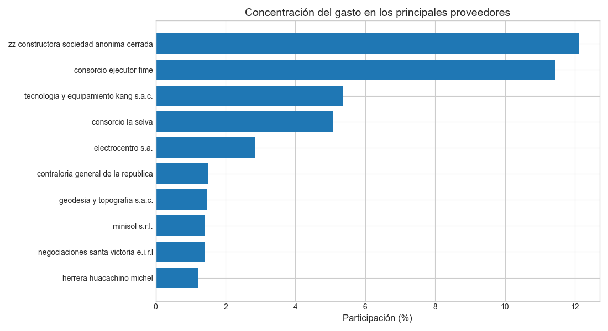

Informe generado automáticamente a partir de un pipeline de analítica de datos en Python
El presente informe tiene como objetivo analizar el comportamiento de las órdenes de bienes y servicios registradas durante el periodo de estudio. A través de un enfoque descriptivo y exploratorio, se busca identificar patrones relevantes en la distribución del gasto, la concentración por proveedor, el estado de ejecución de las órdenes y su evolución temporal.
El dataset analizado contiene información detallada de órdenes de bienes y servicios, incluyendo variables como tipo de orden, tipo de contratación, proveedor, estado del proceso, monto adjudicado y fechas relevantes. Previo al análisis, los datos fueron sometidos a procesos de limpieza, validación y transformación para garantizar su consistencia y trazabilidad.
El análisis se desarrolló mediante un pipeline automatizado estructurado en fases: ingesta de datos, limpieza y validación, transformación analítica, análisis descriptivo, visualización y generación automática de informes. Se emplearon técnicas de estadística descriptiva, agregaciones por grupos y análisis temporal, complementadas con visualizaciones orientadas a la comunicación clara de los resultados.
El análisis de concentración del gasto permite identificar el grado de dependencia respecto a proveedores específicos. Se observa que el proveedor con mayor participación individual concentra aproximadamente 12.11% del monto total adjudicado, lo que evidencia una concentración moderada del gasto.
| Proveedor | Monto total | Participación (%) |
|---|---|---|
| zz constructora sociedad anonima cerrada | 15,736,563.69 | 12.11 |
| consorcio ejecutor fime | 14,865,207.09 | 11.44 |
| tecnologia y equipamiento kang s.a.c. | 6,955,900.00 | 5.35 |
| consorcio la selva | 6,596,130.92 | 5.08 |
| electrocentro s.a. | 3,708,523.14 | 2.85 |
| contraloria general de la republica | 1,955,838.00 | 1.50 |
| geodesia y topografia s.a.c. | 1,910,579.00 | 1.47 |
| minisol s.r.l. | 1,842,470.00 | 1.42 |
| negociaciones santa victoria e.i.r.l | 1,819,421.04 | 1.40 |
| herrera huacachino michel | 1,561,387.88 | 1.20 |
Se presentan únicamente los proveedores con mayor participación para facilitar la interpretación.
El estado de las órdenes refleja el nivel de avance de los procesos contractuales. La distribución observada permite evaluar el grado de ejecución administrativa.
| Estado | Número de órdenes |
|---|---|
| devengada | 7127 |
| comprometida | 2137 |
| anulada | 215 |
| emitida | 8 |
La predominancia de órdenes en estado devengado sugiere un alto nivel de ejecución.
El análisis de la relación entre el número de órdenes y el monto total permite identificar diferencias entre contratos de alta frecuencia y contratos de alto valor económico.
| Número de órdenes | Monto total |
|---|---|
| 4 | 15,736,563.69 |
| 5 | 14,865,207.09 |
| 2 | 6,955,900.00 |
| 3 | 6,596,130.92 |
| 64 | 3,708,523.14 |
| 5 | 1,955,838.00 |
| 10 | 1,910,579.00 |
| 7 | 1,842,470.00 |
| 92 | 1,819,421.04 |
| 82 | 1,561,387.88 |
La evolución temporal del gasto permite identificar periodos de mayor concentración del monto adjudicado, así como patrones de ejecución a lo largo del tiempo.
| Periodo | Monto total |
|---|---|
| 2025-07 | 740,733.67 |
| 2025-06 | 2,270,130.46 |
| 2025-05 | 2,889,359.53 |
| 2025-04 | 1,938,175.34 |
| 2025-03 | 2,499,992.24 |
| 2025-02 | 7,825,862.78 |
| 2025-01 | 122,838.60 |
| 2024-12 | 7,038,326.35 |
| 2024-11 | 4,192,955.15 |
| 2024-10 | 2,062,554.12 |
El análisis por tipo de contratación permite evaluar qué mecanismos concentran la mayor proporción del gasto y cómo se distribuyen los recursos según la modalidad contractual.
| Tipo de contratación | Monto total |
|---|---|
| deviene de procesos de selección | 75,880,542.46 |
| contrataciones hasta 8 uit (ley 30225)((no incluye las derivadas de contrataciones por catálogo electrónico.) | 37,813,904.32 |
| servicio público | 4,905,952.16 |
| derivado de contratación por catálogo electrónico) | 4,240,693.63 |
| convenio entre entidades | 1,367,848.00 |
| deviene de exoneraciones / contratación directa | 1,148,756.40 |
| otras contrataciones sin proceso de selección previo | 53,445.00 |
En conjunto, los resultados evidencian una estructura de gasto caracterizada por una concentración moderada en proveedores específicos, una ejecución administrativa mayoritaria en estados avanzados y una dinámica temporal marcada por picos de gasto en periodos concretos.
El análisis desarrollado permitió identificar patrones relevantes en la gestión de órdenes de bienes y servicios. Destaca la concentración del gasto en un grupo reducido de proveedores, la predominancia de órdenes devengadas y la existencia de picos temporales significativos. Estos hallazgos constituyen una base sólida para evaluaciones futuras de eficiencia y planificación contractual.